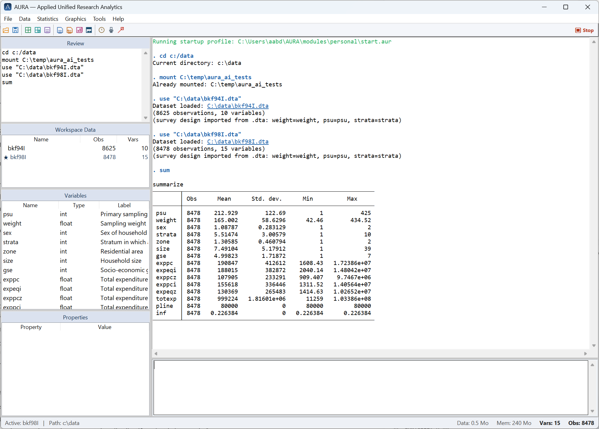
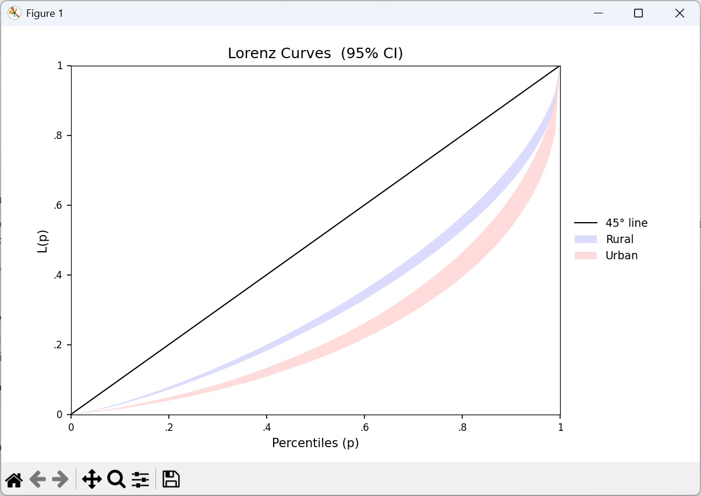
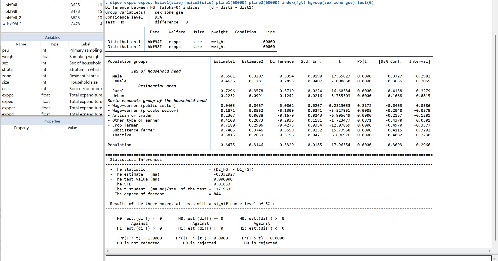
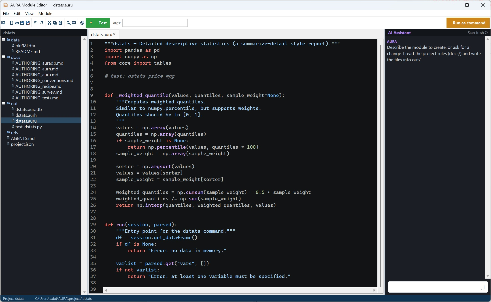
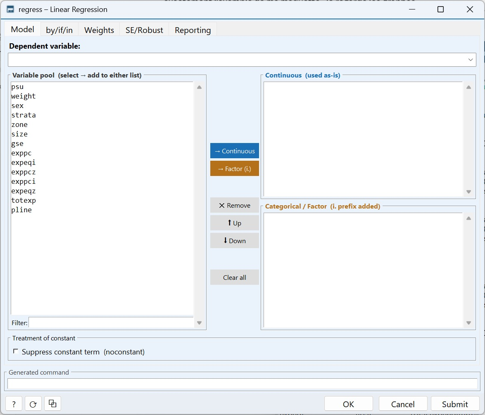
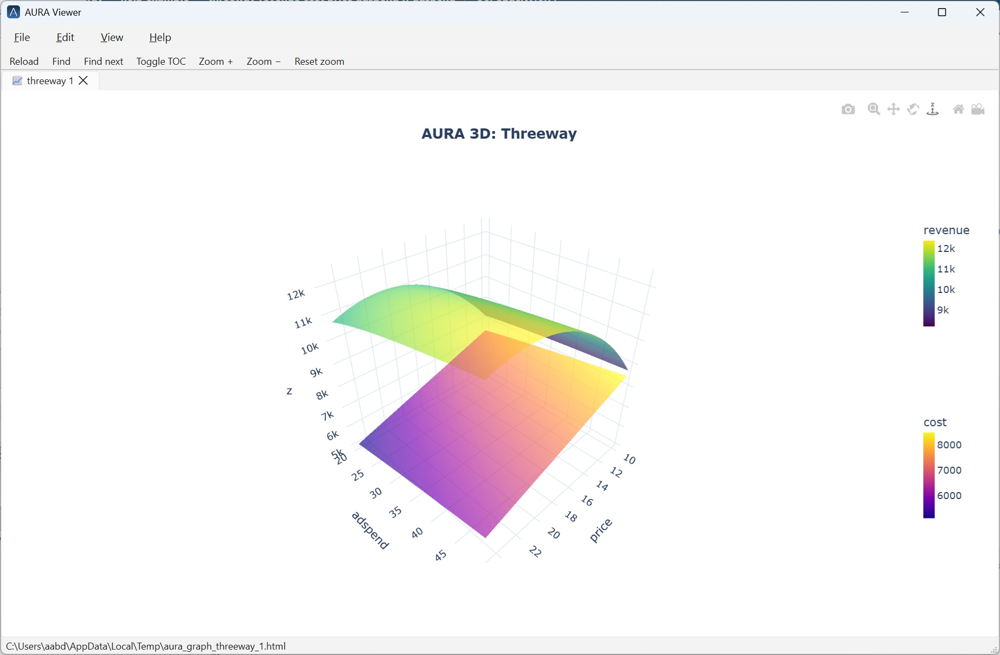
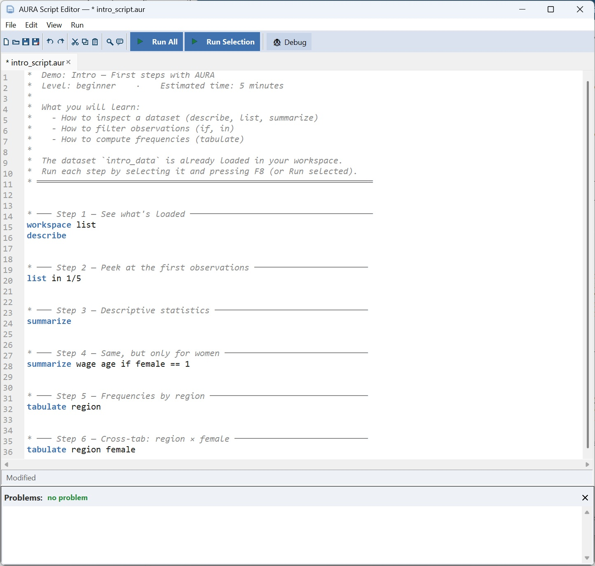
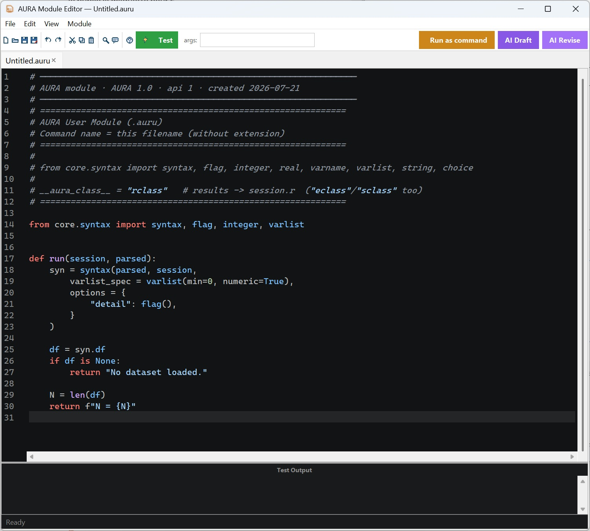
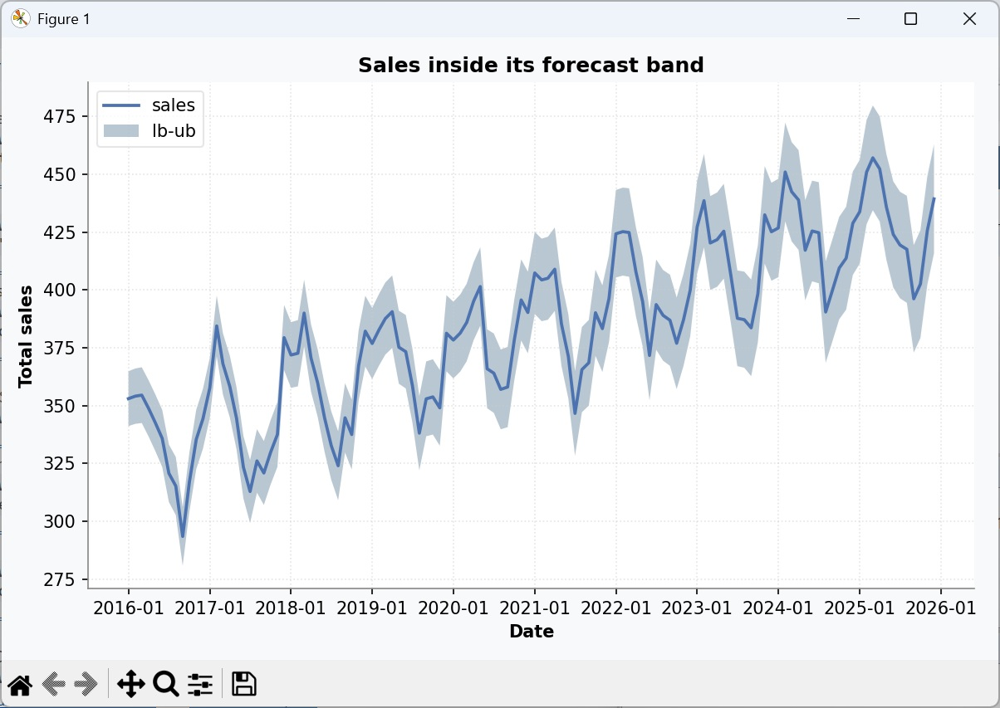
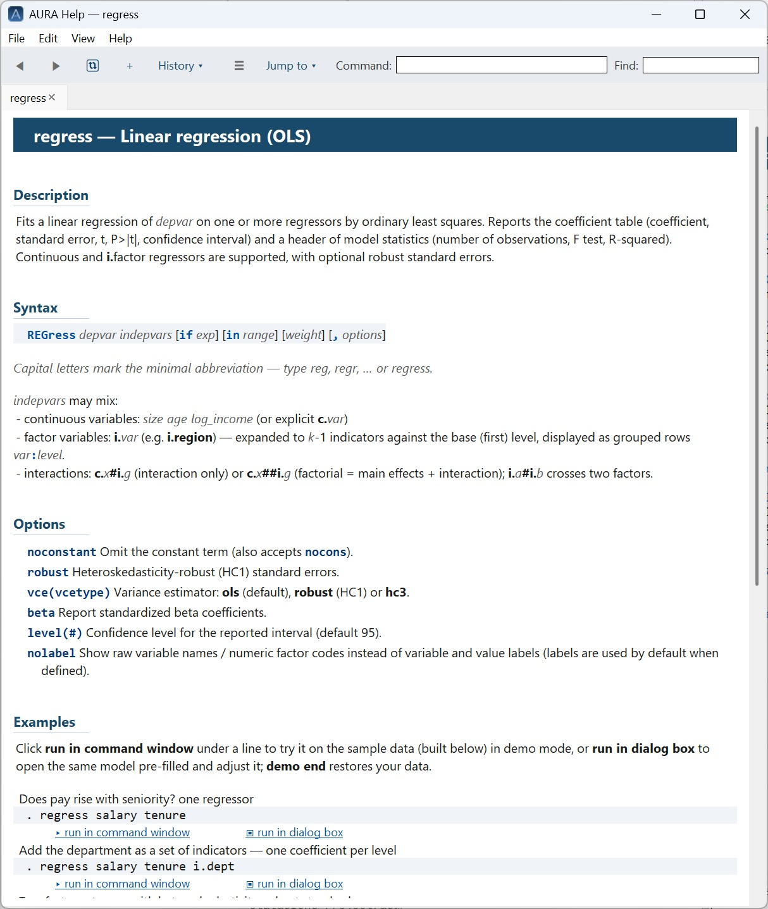

<title>AURA — Applied Unified Research Analytics</title>
<style>
  /* ============================================================
     AURA landing — "the research instrument"
     Palette: navy structure · gold luminance · cool paper
     Type: serif display (journal authority) + system sans + mono (the command line)
     ============================================================ */

  :root {
    --paper:   #f4f6f9;   /* cool off-white, faint blue bias — chosen neutral */
    --surface: #ffffff;
    --ink:     #0f1b2d;   /* deep navy near-black */
    --muted:   #566578;   /* blue-grey secondary */
    --faint:   #8595a8;
    --line:    #d9e0ea;   /* hairlines */
    --line-2:  #c3cedd;
    --blue:    #2f6db0;   /* structural accent, from the logo */
    --blue-ink:#255a92;
    --gold:    #b9821a;   /* the single bold accent — the "aura" */
    --gold-hi: #d29a2a;
    --code-bg: #0f1b2d;   /* the terminal is always dark — an instrument */
    --code-fg: #dce6f2;
    --code-dim:#7f92a8;

    --font-display: Georgia, 'Iowan Old Style', 'Palatino Linotype', 'Book Antiqua', serif;
    --font-sans: 'Segoe UI', system-ui, -apple-system, 'Helvetica Neue', Arial, sans-serif;
    --font-mono: 'Cascadia Code', 'Consolas', ui-monospace, 'SF Mono', Menlo, monospace;

    --maxw: 1140px;
    --gutter: clamp(20px, 5vw, 64px);
  }

  @media (prefers-color-scheme: dark) {
    :root {
      --paper:   #0b1420;
      --surface: #10202f;
      --ink:     #e8eef6;
      --muted:   #9fb0c4;
      --faint:   #6d8098;
      --line:    #1e3346;
      --line-2:  #2a445c;
      --blue:    #5c9ad6;
      --blue-ink:#7cb0e2;
      --gold:    #e0a63c;
      --gold-hi: #f0bb58;
      --code-bg: #08111c;
      --code-fg: #dce6f2;
      --code-dim:#6d8298;
    }
  }
  /* explicit toggle wins in both directions */
  :root[data-theme="light"] {
    --paper:#f4f6f9; --surface:#fff; --ink:#0f1b2d; --muted:#566578; --faint:#8595a8;
    --line:#d9e0ea; --line-2:#c3cedd; --blue:#2f6db0; --blue-ink:#255a92;
    --gold:#b9821a; --gold-hi:#d29a2a; --code-bg:#0f1b2d; --code-fg:#dce6f2; --code-dim:#7f92a8;
  }
  :root[data-theme="dark"] {
    --paper:#0b1420; --surface:#10202f; --ink:#e8eef6; --muted:#9fb0c4; --faint:#6d8098;
    --line:#1e3346; --line-2:#2a445c; --blue:#5c9ad6; --blue-ink:#7cb0e2;
    --gold:#e0a63c; --gold-hi:#f0bb58; --code-bg:#08111c; --code-fg:#dce6f2; --code-dim:#6d8298;
  }

  * { box-sizing: border-box; }
  html { -webkit-text-size-adjust: 100%; scroll-behavior: smooth; }
  @media (prefers-reduced-motion: reduce) { html { scroll-behavior: auto; } }

  body {
    margin: 0;
    background: var(--paper);
    color: var(--ink);
    font-family: var(--font-sans);
    font-size: 17px;
    line-height: 1.6;
    -webkit-font-smoothing: antialiased;
  }

  .wrap { max-width: var(--maxw); margin-inline: auto; padding-inline: var(--gutter); }

  a { color: var(--blue); text-decoration: none; }
  a:hover { color: var(--blue-ink); }
  :focus-visible { outline: 2px solid var(--gold); outline-offset: 3px; border-radius: 2px; }

  h1, h2, h3 { font-family: var(--font-display); font-weight: 600; text-wrap: balance; line-height: 1.15; }

  .eyebrow {
    font-family: var(--font-mono);
    font-size: .74rem;
    letter-spacing: .16em;
    text-transform: uppercase;
    color: var(--gold);
    margin: 0 0 1rem;
  }

  /* ---- top bar ---------------------------------------------------------- */
  header.top {
    position: sticky; top: 0; z-index: 50;
    background: color-mix(in srgb, var(--paper) 88%, transparent);
    backdrop-filter: blur(10px);
    border-bottom: 1px solid var(--line);
  }
  .top .wrap { display: flex; align-items: center; gap: 1.5rem; height: 64px; }
  .brand { display: flex; align-items: center; gap: .6rem; font-weight: 600; letter-spacing: .01em; }
  .brand .mark {
    width: 30px; height: 30px; border-radius: 7px; flex: none;
    background: linear-gradient(150deg, #112d4e, #3f72af);
    display: grid; place-items: center;
    color: #fff; font-family: var(--font-display); font-weight: 700; font-size: 17px;
    box-shadow: 0 1px 3px rgba(17,45,78,.4);
  }
  .brand b { font-family: var(--font-display); font-size: 1.16rem; }
  .brand span { color: var(--faint); font-weight: 400; font-size: .95rem; }
  nav.main { margin-left: auto; display: flex; gap: 1.6rem; align-items: center; }
  nav.main a { color: var(--muted); font-size: .95rem; }
  nav.main a:hover { color: var(--ink); }
  @media (max-width: 760px) { nav.main a.hideable { display: none; } }

  .btn {
    font-family: var(--font-sans); font-size: .95rem; font-weight: 600;
    padding: .6em 1.15em; border-radius: 8px; cursor: pointer; border: 1px solid transparent;
    display: inline-flex; align-items: center; gap: .5em; transition: transform .12s ease, background .15s ease;
  }
  .btn:active { transform: translateY(1px); }
  .btn-gold { background: var(--gold); color: #1a1206; border-color: var(--gold); }
  .btn-gold:hover { background: var(--gold-hi); color: #1a1206; }
  .btn-ghost { background: transparent; color: var(--ink); border-color: var(--line-2); }
  .btn-ghost:hover { border-color: var(--blue); color: var(--blue); }

  /* ---- hero ------------------------------------------------------------- */
  .hero { padding: clamp(3rem, 7vw, 6rem) 0 clamp(2.5rem, 5vw, 4rem); }
  .hero-grid { display: grid; grid-template-columns: 1.02fr 1fr; gap: clamp(2rem, 5vw, 4rem); align-items: center; }
  @media (max-width: 900px) { .hero-grid { grid-template-columns: 1fr; } }

  .hero h1 { font-size: clamp(2.3rem, 5.2vw, 3.55rem); margin: 0 0 1.1rem; letter-spacing: -0.015em; }
  .hero h1 em { font-style: italic; color: var(--blue); }
  .lede { font-size: 1.16rem; color: var(--muted); margin: 0 0 1.9rem; max-width: 34ch; }
  .cta-row { display: flex; flex-wrap: wrap; gap: .8rem; align-items: center; }
  .meta-line { font-family: var(--font-mono); font-size: .82rem; color: var(--faint); margin-top: 1.25rem; letter-spacing: .01em; }
  .meta-line b { color: var(--muted); font-weight: 600; }

  /* ---- the instrument (a real AURA screen) ------------------------------ */
  .screen {
    background: var(--code-bg); border-radius: 12px; overflow: hidden;
    box-shadow: 0 24px 60px -28px rgba(6,18,34,.7), 0 2px 8px rgba(6,18,34,.25);
    border: 1px solid rgba(255,255,255,.06);
  }
  .screen .bar { display: flex; align-items: center; gap: .5rem; padding: .7rem .9rem; border-bottom: 1px solid rgba(255,255,255,.07); }
  .screen .bar i { width: 11px; height: 11px; border-radius: 50%; background: #33465c; display: inline-block; }
  .screen .bar b { color: var(--code-dim); font-family: var(--font-mono); font-size: .78rem; margin-left: .4rem; font-weight: 500; }
  .screen .body { padding: 1.1rem 1.2rem 1.3rem; font-family: var(--font-mono); font-size: 13px; line-height: 1.5; color: var(--code-fg); overflow-x: auto; }
  .screen pre { margin: 0; white-space: pre; }
  .screen .prompt { color: var(--gold-hi); }
  .screen .cmd { color: #eaf1f9; }
  .screen .dim { color: var(--code-dim); }
  .screen .rule { color: #40566e; }
  .screen .num { color: #86c1ff; }
  .lorenz-cap { display: flex; justify-content: space-between; align-items: baseline; padding: .2rem .3rem .1rem; font-family: var(--font-mono); font-size: .72rem; color: var(--code-dim); }
  canvas#lorenz { display: block; width: 100%; height: auto; }

  /* ---- section scaffolding ---------------------------------------------- */
  section { padding: clamp(3rem, 6vw, 5rem) 0; }
  .band { border-top: 1px solid var(--line); }
  .sec-head { max-width: 60ch; margin-bottom: 2.6rem; }
  .sec-head h2 { font-size: clamp(1.7rem, 3.4vw, 2.3rem); margin: 0 0 .7rem; }
  .sec-head p { color: var(--muted); margin: 0; font-size: 1.08rem; }

  /* box-drawing divider — AURA's own table glyphs, an authentic device */
  .bd { font-family: var(--font-mono); color: var(--line-2); font-size: .9rem; letter-spacing: .05em; overflow: hidden; white-space: nowrap; user-select: none; }

  /* ---- pillars ---------------------------------------------------------- */
  .pillars { display: grid; grid-template-columns: repeat(3, 1fr); gap: 0; border: 1px solid var(--line); border-radius: 12px; overflow: hidden; background: var(--surface); }
  @media (max-width: 820px) { .pillars { grid-template-columns: 1fr; } }
  .pillar { padding: 1.8rem 1.7rem; border-right: 1px solid var(--line); }
  .pillar:last-child { border-right: none; }
  @media (max-width: 820px) { .pillar { border-right: none; border-bottom: 1px solid var(--line); } .pillar:last-child { border-bottom: none; } }
  .pillar h3 { font-size: 1.24rem; margin: .2rem 0 .5rem; }
  .pillar p { color: var(--muted); font-size: .98rem; margin: 0; }
  .pillar .tag { font-family: var(--font-mono); font-size: .72rem; letter-spacing: .12em; text-transform: uppercase; color: var(--blue); }

  /* ---- capabilities (table-like grid, honoring the box-drawing motif) --- */
  .caps { display: grid; grid-template-columns: repeat(4, 1fr); gap: 1px; background: var(--line); border: 1px solid var(--line); border-radius: 12px; overflow: hidden; }
  @media (max-width: 900px) { .caps { grid-template-columns: repeat(2, 1fr); } }
  @media (max-width: 520px) { .caps { grid-template-columns: 1fr; } }
  .cap { background: var(--surface); padding: 1.35rem 1.3rem; }
  .cap h4 { margin: 0 0 .35rem; font-family: var(--font-sans); font-size: 1.02rem; font-weight: 650; letter-spacing: -0.01em; }
  .cap p { margin: 0; color: var(--muted); font-size: .9rem; line-height: 1.5; }
  .cap .k { font-family: var(--font-mono); color: var(--gold); font-size: .95rem; }

  /* ---- advantages (the practical case) ---------------------------------- */
  .adv-grid { display: grid; grid-template-columns: 1fr 1fr; gap: 2rem 3rem; }
  @media (max-width: 760px) { .adv-grid { grid-template-columns: 1fr; gap: 1.6rem; } }
  .adv { border-top: 2px solid var(--gold); padding-top: 1rem; }
  .adv h3 { font-size: 1.16rem; margin: 0 0 .45rem; }
  .adv p { color: var(--muted); font-size: .98rem; margin: 0; }
  .adv .k { font-family: var(--font-mono); color: var(--gold); font-size: .92em; }

  /* ---- distributive showcase -------------------------------------------- */
  .showcase { display: grid; grid-template-columns: 1fr 1fr; gap: clamp(2rem,5vw,3.5rem); align-items: center; }
  @media (max-width: 860px) { .showcase { grid-template-columns: 1fr; } }
  .showcase h2 { font-size: clamp(1.7rem, 3.4vw, 2.3rem); margin: 0 0 1rem; }
  .daap-name { font-family: var(--font-mono); color: var(--gold); letter-spacing: .01em; }
  .daap-badge {
    display: inline-block; font-family: var(--font-mono); font-size: .74rem;
    letter-spacing: .06em; color: var(--gold);
    background: color-mix(in srgb, var(--gold) 12%, transparent);
    border: 1px solid color-mix(in srgb, var(--gold) 40%, transparent);
    padding: .4em .8em; border-radius: 6px; margin: 0 0 .3rem;
  }
  .showcase p { color: var(--muted); margin: 0 0 1.2rem; }
  .chips { display: flex; flex-wrap: wrap; gap: .5rem; }
  .chip { font-family: var(--font-mono); font-size: .8rem; padding: .32em .7em; border: 1px solid var(--line-2); border-radius: 6px; color: var(--ink); background: var(--surface); }
  .chip.on { border-color: var(--gold); color: var(--gold); }

  /* ---- window screenshots (real captures) ------------------------------- */
  .winshot { margin: 0; }
  .dipov-fig { margin-top: 2.6rem; }
  .dipov-fig figcaption { max-width: 70ch; }
  .winshot img {
    display: block; width: 100%; height: auto;
    border: 1px solid var(--line-2); border-radius: 10px; background: var(--surface);
  }
  .hero-win img {
    border-radius: 12px;
    box-shadow: 0 30px 70px -34px rgba(6,18,34,.65), 0 3px 10px rgba(6,18,34,.18);
  }
  .winshot figcaption {
    font-size: .84rem; color: var(--muted); margin-top: .7rem; line-height: 1.4;
  }
  .winshot figcaption .k { font-family: var(--font-mono); color: var(--gold); font-size: .9em; }

  /* ---- screenshots ------------------------------------------------------ */
  .shots { display: grid; grid-template-columns: repeat(2, 1fr); gap: 1.6rem 1.1rem; }
  @media (max-width: 700px) { .shots { grid-template-columns: 1fr; } }
  .shot {
    border: 1px solid var(--line); border-radius: 10px; background: var(--surface);
    aspect-ratio: 16 / 10; display: grid; place-items: center; text-align: center; overflow: hidden;
    position: relative;
  }
  .shot .ph {
    font-family: var(--font-mono); font-size: .82rem; color: var(--faint);
    display: grid; gap: .3rem; padding: 1rem;
  }
  .shot .ph b { color: var(--muted); font-family: var(--font-sans); font-size: .95rem; }
  .shot::after { content: "screenshot"; position: absolute; top: 10px; left: 12px; font-family: var(--font-mono); font-size: .64rem; letter-spacing: .12em; text-transform: uppercase; color: var(--faint); }

  /* ---- download / cite -------------------------------------------------- */
  .get { display: grid; grid-template-columns: 1.1fr .9fr; gap: clamp(2rem,5vw,3.5rem); align-items: start; }
  @media (max-width: 820px) { .get { grid-template-columns: 1fr; } }
  .dlcard { background: var(--surface); border: 1px solid var(--line); border-radius: 12px; padding: 1.8rem; }
  .dlcard h3 { font-size: 1.4rem; margin: 0 0 .3rem; }
  .dlcard .os { font-family: var(--font-mono); font-size: .82rem; color: var(--muted); margin: 0 0 1.2rem; }
  .dlcard ul { list-style: none; margin: 1.3rem 0 0; padding: 0; display: grid; gap: .55rem; }
  .dlcard li { font-size: .92rem; color: var(--muted); display: flex; gap: .6rem; }
  .dlcard li::before { content: "→"; color: var(--gold); }
  .dl-note { margin-top: 1.1rem; font-size: .84rem; line-height: 1.5; color: var(--muted); background: color-mix(in srgb, var(--blue) 8%, transparent); border: 1px solid var(--line); border-left: 3px solid var(--blue); border-radius: 6px; padding: .7rem .85rem; }
  .dl-note b { color: var(--ink); }
  .cite { font-family: var(--font-mono); font-size: .8rem; }
  .cite pre { background: var(--code-bg); color: var(--code-fg); padding: 1.1rem 1.2rem; border-radius: 10px; overflow-x: auto; margin: .6rem 0 0; line-height: 1.55; }
  .cite pre .key { color: var(--gold-hi); }

  /* ---- footer ----------------------------------------------------------- */
  footer { border-top: 1px solid var(--line); padding: 2.6rem 0 3rem; color: var(--muted); }
  .foot { display: flex; flex-wrap: wrap; gap: 1.5rem 2.5rem; justify-content: space-between; align-items: flex-start; }
  .foot .col h5 { font-family: var(--font-mono); font-size: .72rem; letter-spacing: .12em; text-transform: uppercase; color: var(--faint); margin: 0 0 .7rem; font-weight: 600; }
  .foot .col a { display: block; color: var(--muted); font-size: .92rem; margin-bottom: .35rem; }
  .foot .col a:hover { color: var(--blue); }
  .foot .about { max-width: 38ch; }
  .foot .about p { margin: .2rem 0 0; font-size: .9rem; }
  .legal { margin-top: 2rem; padding-top: 1.4rem; border-top: 1px solid var(--line); font-size: .82rem; color: var(--faint); display: flex; flex-wrap: wrap; gap: .5rem 1.5rem; justify-content: space-between; }

  .draft-note {
    background: color-mix(in srgb, var(--gold) 12%, var(--paper));
    border-bottom: 1px solid var(--line);
    font-family: var(--font-mono); font-size: .78rem; color: var(--muted);
    text-align: center; padding: .5rem 1rem;
  }
  .draft-note b { color: var(--ink); }
</style>

<header class="top">
  <div class="wrap">
    <div class="brand">
      <span class="mark">A</span>
      <b>AURA</b><span>Research Analytics</span>
    </div>
    <nav class="main">
      <a class="hideable" href="#why">Why AURA</a>
      <a class="hideable" href="#capabilities">Capabilities</a>
      <a class="hideable" href="commands.html">Commands</a>
      <a class="hideable" href="#distributive">Distributive</a>
      <a class="hideable" href="#get">Download</a>
    </nav>
  </div>
</header>

<!-- ================= HERO ================= -->
<section class="hero">
  <div class="wrap hero-grid">
    <div class="hero-copy">
      <p class="eyebrow">Applied Unified Research Analytics</p>
      <h1>Statistics and econometrics you can <em>read, run, and reproduce</em>.</h1>
      <p class="lede">A command-driven analytics environment — Python-native, free and open, with poverty and inequality analysis built in.</p>
      <div class="cta-row">
        <a class="btn btn-gold" href="#get">Download for Windows</a>
        <a class="btn btn-ghost" href="#capabilities">See what it does</a>
      </div>
      <p class="meta-line"><b>Free · GPLv3</b> &nbsp;·&nbsp; Windows 10/11 64-bit &nbsp;·&nbsp; no Python to install</p>
    </div>

    <div class="hero-vis">
      <figure class="winshot hero-win">
        
      </figure>
    </div>
  </div>
</section>

<!-- ================= WHY / PILLARS ================= -->
<section id="why" class="band">
  <div class="wrap">
    <div class="sec-head">
      <p class="eyebrow">Why AURA</p>
      <h2>Built for research, not for a licence.</h2>
      <p>The rigor and familiar command grammar applied researchers rely on — on a modern, open foundation you can inspect, script, and extend.</p>
    </div>
    <div class="pillars">
      <div class="pillar">
        <span class="tag">Open</span>
        <h3>Free and open</h3>
        <p>Released under the GNU GPLv3. No licence fee, no seats, no lock-in — download it, share it with your students, read the source, and build on it.</p>
      </div>
      <div class="pillar">
        <span class="tag">Python</span>
        <h3>Python-native &amp; reproducible</h3>
        <p>pandas, statsmodels and scipy under the hood. Scripts re-run end to end; results carry design-based standard errors; your own commands are plain <span class="cap" style="color:var(--gold)">.auru</span> modules — and when a one-off needs it, drop into raw Python or matplotlib mid-script.</p>
      </div>
      <div class="pillar">
        <span class="tag">DAAP included</span>
        <h3>Poverty &amp; inequality, built in</h3>
        <p>AURA bundles <b>DAAP</b> — a complete distributive-analysis package: FGT indices, Gini and Lorenz, polarization, pro-poor growth, dominance and decompositions. In the box, not a paid add-on.</p>
      </div>
    </div>
  </div>
</section>

<!-- ================= CAPABILITIES ================= -->
<section id="capabilities" class="band">
  <div class="wrap">
    <div class="sec-head">
      <p class="eyebrow">Capabilities</p>
      <h2>A complete workbench, from raw data to publication.</h2>
      <p>Everyday econometrics and data work, with a graphical dialog behind every command for when you'd rather point and click. <a href="commands.html">See the full command reference &rarr;</a></p>
    </div>
    <div class="caps">
      <div class="cap"><h4>Regression</h4><p>OLS, logit / probit / poisson, instrumental variables and panel models — robust and clustered standard errors, factor variables.</p></div>
      <div class="cap"><h4>Survey data</h4><p><span class="k">svyset</span> designs with Taylor-linearized standard errors: means, totals, ratios, proportions and regression.</p></div>
      <div class="cap"><h4>Results &amp; matrices</h4><p>Stored results (<span class="k">r()</span> / <span class="k">e()</span>), a matrix language, and post-estimation — <span class="k">nlcom</span>, <span class="k">margins</span>, <span class="k">predict</span>, <span class="k">test</span>.</p></div>
      <div class="cap"><h4>Data management</h4><p>A multi-dataset workspace: <span class="k">merge</span>, <span class="k">reshape</span>, <span class="k">collapse</span>, <span class="k">egen</span> — the original is never silently overwritten.</p></div>
      <div class="cap"><h4>Graphics</h4><p>Publication-ready 2-D plots and interactive 3-D surfaces — histograms, kernel densities, Lorenz and concentration curves.</p></div>
      <div class="cap"><h4>Reproducible scripts</h4><p><span class="k">.aur</span> scripts with loops, macros and matrices that re-run end to end — the do-file discipline, on open tooling.</p></div>
      <div class="cap"><h4>Extensible modules</h4><p>Write a new command as a small Python <span class="k">.auru</span> file — no registration, no restart, help and dialogs come along.</p></div>
      <div class="cap"><h4>Help &amp; demos</h4><p>Formatted help for every command, with runnable examples that load their own sample data in a sandbox.</p></div>
    </div>
  </div>
</section>

<!-- ================= ADVANTAGES ================= -->
<section id="advantages" class="band">
  <div class="wrap">
    <div class="sec-head">
      <p class="eyebrow">The practical case</p>
      <h2>Everything in one place — and nothing to wrestle with.</h2>
      <p>The reasons researchers and labs actually keep it.</p>
    </div>
    <div class="adv-grid">
      <div class="adv">
        <h3>Batteries included</h3>
        <p>One installer bundles the popular Python scientific stack — pandas, NumPy, SciPy, statsmodels, matplotlib, Plotly. No pip, no virtual environments, no dependency conflicts to debug.</p>
      </div>
      <div class="adv">
        <h3>Fast where it counts</h3>
        <p>The heavy math runs on compiled native code, and the hottest kernels — survey variance, the bootstrap — are JIT-compiled with Numba. Interpreter convenience, compiled speed.</p>
      </div>
      <div class="adv">
        <h3>One tool, two audiences</h3>
        <p>Analysts type commands, or point and click a dialog. Developers add a command as a small <span class="k">.auru</span> Python file — no registration, no restart; its help and dialog come for free.</p>
      </div>
      <div class="adv">
        <h3>Nothing to install but AURA</h3>
        <p>The target machine needs neither Python, nor pip, nor a single library. One self-contained download — hand it to a partner or a whole classroom, and it runs.</p>
      </div>
      <div class="adv">
        <h3>Reproducible end to end</h3>
        <p><span class="k">.aur</span> scripts, macros and matrices re-run start to finish; estimates carry design-based standard errors; results are stored (<span class="k">r()</span> / <span class="k">e()</span>) for the next command.</p>
      </div>
      <div class="adv">
        <h3>Ship your own methods</h3>
        <p>Bundle your commands into a package and publish it to a repository. Others install it with <span class="k">pkg install</span>; AURA tracks versions, pulls updates and even wires the menu entries — a real distribution channel for a lab's or an author's methods.</p>
      </div>
      <div class="adv">
        <h3>Publication-ready output</h3>
        <p>Every result renders consistently and exports to LaTeX, HTML, Markdown or CSV; graphics span 2-D plots and interactive 3-D surfaces — drop them straight into a paper.</p>
      </div>
      <div class="adv">
        <h3>Learn as you go</h3>
        <p>Formatted help for every command, with runnable examples that load their own data in a sandbox — plus the full <a href="commands.html">command reference</a>.</p>
      </div>
    </div>
  </div>
</section>

<!-- ================= DISTRIBUTIVE SHOWCASE ================= -->
<section id="distributive" class="band">
  <div class="wrap">
    <div class="sec-head">
      <p class="eyebrow">Flagship included package</p>
      <h2>Meet <span class="daap-name">DAAP</span> — distributive analysis, in the box.</h2>
    </div>
    <div class="showcase">
      <div>
        <p><span class="daap-badge">DAAP · Distributive Analysis for AURA · included · GPLv3</span></p>
        <p>Most statistical packages treat poverty and inequality measurement as an afterthought or a paid extension. AURA bundles <b>DAAP</b> as a complete package — measurement, differences between distributions, curves and decompositions — with design-based standard errors throughout.</p>
        <p>It carries the heritage of the <b>DASP</b> methods into an open, Python-native tool: the same rigor, none of the licence.</p>
        <div class="chips">
          <span class="chip on">ipov</span><span class="chip on">ineq</span><span class="chip">clorenz</span>
          <span class="chip">ipola</span><span class="chip">ipropoor</span><span class="chip">dompov</span>
          <span class="chip">rbdineq</span><span class="chip">quinsh</span><span class="chip on">dsineqg</span>
        </div>
      </div>
      <figure class="winshot"></figure>
    </div>
    <figure class="winshot dipov-fig"><figcaption>A real result — the change in FGT poverty from 1994 to 1998, broken out by sex, area and socio-economic group. Every difference carries its design-based standard error, <em>t</em>-statistic, p-value and 95% interval — with the formal test underneath.</figcaption></figure>
  </div>
</section>

<!-- ================= AI AUTHORING SHOWCASE ================= -->
<section id="authoring" class="band">
  <div class="wrap">
    <div class="sec-head">
      <p class="eyebrow">New — extend AURA with AI</p>
      <h2>Write new commands with an AI — checked against your data.</h2>
    </div>
    <div class="showcase">
      <div>
        <p>Describe a method in plain language and AURA's assistant drafts the command, its help and its tests — grounded on the project's own rules. It doesn't stop at &ldquo;it runs&rdquo;: the module is verified against <b>your</b> reference numbers, and the loop keeps correcting until they match.</p>
        <p>Prefer your own tools? Open the project in <b>Claude Code</b>, <b>Cursor</b> or <b>Gemini</b> — same rules, same ground truth. Then publish it as a package others install with <span class="k">pkg install</span>.</p>
        <div class="chips">
          <span class="chip on">describe</span><span class="chip on">draft</span><span class="chip">test vs your data</span>
          <span class="chip">iterate</span><span class="chip on">publish</span>
        </div>
      </div>
      <figure class="winshot"></figure>
    </div>
  </div>
</section>

<!-- ================= SCREENSHOTS ================= -->
<section class="band">
  <div class="wrap">
    <div class="sec-head">
      <p class="eyebrow">A look inside</p>
      <h2>The workspace, at a glance.</h2>
      <p>Real captures of AURA at work — command dialogs, interactive 3-D graphics, the script and module editors, two-way plots, and the help browser with runnable demos.</p>
    </div>
    <div class="shots">
      <figure class="winshot"><figcaption>Every command has a dialog — and it writes the command for you</figcaption></figure>
      <figure class="winshot"><figcaption>Interactive 3-D surfaces — rotate, zoom, export</figcaption></figure>
      <figure class="winshot"><figcaption>The script editor — reproducible <span class="k">.aur</span> workflows</figcaption></figure>
      <figure class="winshot"><figcaption>The module editor — write your own commands</figcaption></figure>
      <figure class="winshot"><figcaption>Two-way graphics — layered plots, publication-ready</figcaption></figure>
      <figure class="winshot"><figcaption>Formatted help — with runnable, sandboxed demos</figcaption></figure>
    </div>
  </div>
</section>

<!-- ================= DOWNLOAD / CITE ================= -->
<section id="get" class="band">
  <div class="wrap">
    <div class="sec-head">
      <p class="eyebrow">Get AURA</p>
      <h2>One file. Nothing else to install.</h2>
      <p>The installer bundles Python and every library — the target machine needs neither Python nor pip.</p>
    </div>
    <div class="get">
      <div class="dlcard">
        <h3>AURA 1.0 for Windows</h3>
        <p class="os">Windows 10 / 11 · 64-bit · self-contained installer (~250 MB)</p>
        <a class="btn btn-gold" href="https://github.com/aabbdd12/aura/releases/latest/download/AURA-1.0-Setup.exe" aria-label="Download the AURA installer for Windows">Download the installer</a>
        <ul>
          <li>No Python, pip or dependencies to set up beforehand</li>
          <li>Example datasets and command help included</li>
          <li>Uninstalls cleanly from Add / Remove Programs</li>
          <li>macOS and Linux builds are on the roadmap</li>
        </ul>
        <p class="dl-note"><b>First launch on a fresh PC?</b> Windows may show a SmartScreen notice for a new, unsigned download &mdash; click <b>More info</b>, then <b>Run anyway</b>. That is expected for free, independently published software, and it clears as more people install AURA.</p>
      </div>
      <div class="cite">
        <p class="eyebrow" style="margin-bottom:.4rem">Using AURA in your work?</p>
        <p style="font-family:var(--font-sans);color:var(--muted);margin:.2rem 0 0">A citation helps other researchers find it and supports the project.</p>
        <pre><span class="key">@software</span>{aura2026,
  title  = {AURA: Applied Unified Research Analytics},
  author = {Araar, Abdelkrim},
  year   = {2026},
  note   = {Version 1.0, GPL-3.0-or-later}
}</pre>
      </div>
    </div>
  </div>
</section>

<!-- ================= FOOTER ================= -->
<footer>
  <div class="wrap">
    <div class="foot">
      <div class="col about">
        <div class="brand" style="margin-bottom:.6rem"><span class="mark">A</span><b>AURA</b></div>
        <p>An open, Python-native environment for applied statistics, econometrics and distributive analysis.</p>
        <p style="margin-top:.6rem">By Dr. Abdelkrim Araar.</p>
      </div>
      <div class="col">
        <h5>Product</h5>
        <a href="#capabilities">Capabilities</a>
        <a href="#distributive">Distributive analysis</a>
        <a href="#get">Download</a>
      </div>
      <div class="col">
        <h5>Learn</h5>
        <a href="#">User Guide</a>
        <a href="#">Developer Guide</a>
        <a href="commands.html">Command reference</a>
      </div>
      <div class="col">
        <h5>Project</h5>
        <a href="#">Source (GitHub)</a>
        <a href="#">Licence — GPLv3</a>
        <a href="#">How to cite</a>
      </div>
    </div>
    <div class="legal">
      <span>© 2026 Dr. Abdelkrim Araar · Free software under the GNU General Public License v3.0 or later.</span>
      <span>AURA 1.0</span>
    </div>
  </div>
</footer>

